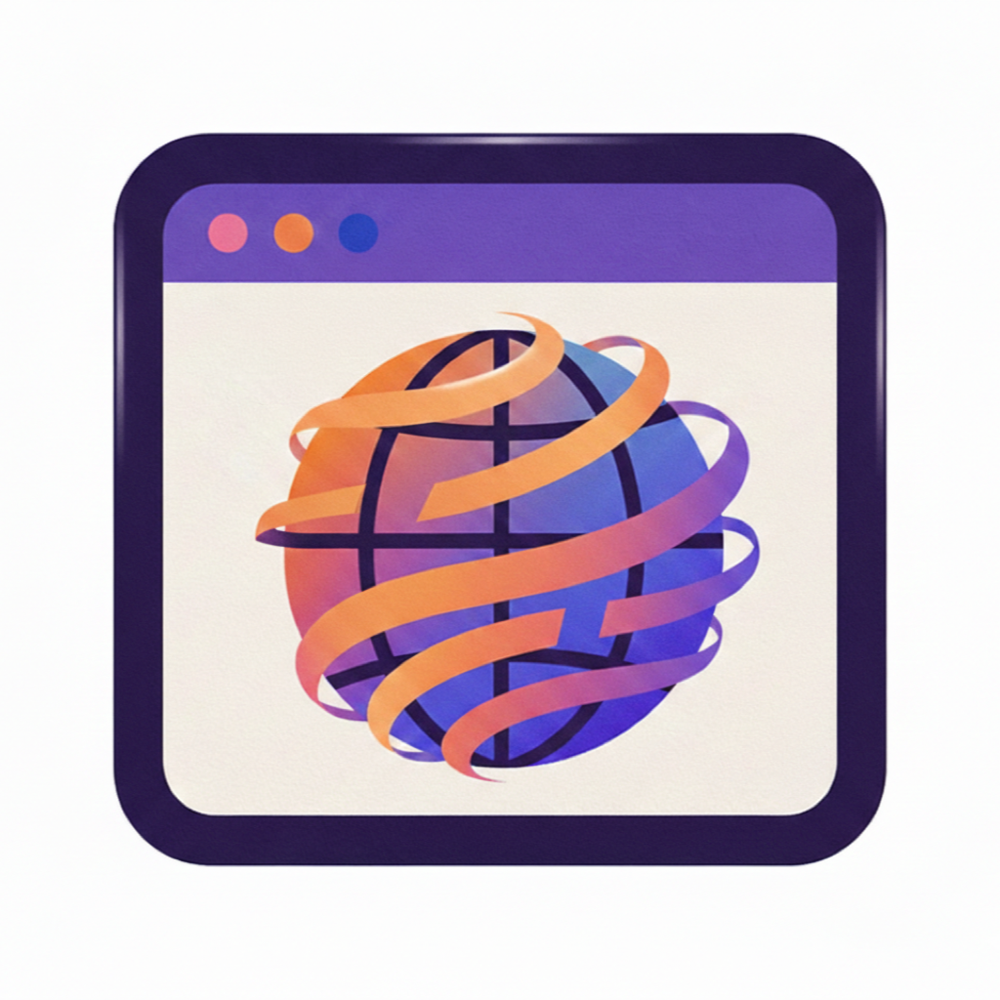
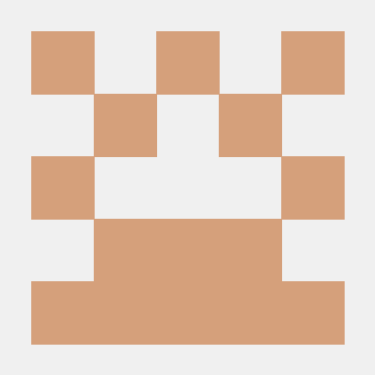

APP 01
iPhone · iPad · Mac
RedSum
A Reddit client that turns posts and comment threads into useful summaries. Read communities, ask grounded follow-up questions, compare research, and save what matters.
Available now
Four focused apps, built and shipped independently.
iPhone · iPad · Mac
A Reddit client that turns posts and comment threads into useful summaries. Read communities, ask grounded follow-up questions, compare research, and save what matters.
iPhone · iPad · Mac
A clean RSS reader for following publications and feeds without the noise of an algorithmic timeline. Your reading list, on your devices.

APP 03iPhone · iPad · TestFlight
A focused browser with tab management, reader tools, content blocking, a share extension, and AI-assisted page summaries.
macOS · Open source
A floating Mac assistant for summarizing, rewriting, translating, inspecting files, and asking follow-ups from any app.
Selected experiments
A selection of native tools and prototypes from my public GitHub work. Each project starts with a specific friction I want to remove.
Browse all repositoriesPrivate, system-wide autocomplete built around local GGUF models, with app-specific controls and on-device context handling.
A menu-bar utility that maps a physical 3×3 trackpad grid to stable app shortcuts — a virtual Stream Deck under your fingertips.
Two trackpad gestures to lock focus on the current app or pin a live preview of a window while working elsewhere.
A menu-bar utility that keeps websites and live app windows visible in resizable always-on-top panels, with opacity controls and saved layouts.
A native menu-bar Reddit client with summaries, Q&A, media browsing, text-to-speech, and secure OAuth and Keychain configuration.
A fork of mkbula/HideMyData that extends local PII redaction with document summaries, grounded Q&A, Apple Intelligence model selection, and exports.
A privacy-first document workspace with local redaction, reversible placeholders, summaries, grounded Q&A, and on-device MLX models.

JOAO VALENTE · DEVELOPERA little context
I’m an independent developer working mostly in Swift and SwiftUI. I care about direct, understandable software that solves a real problem without getting between people and their work.
My projects often explore private local AI, new Apple platform capabilities, unusual trackpad interactions, and calmer ways to navigate information.
Have a question about one of my apps?
Let’s talk on GitHub